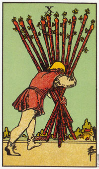

权杖十暗示一个委任某些责任的时机。
权杖十描绘一个人带着十根权杖。他被这些权杖给压的沉下去，而且它们也遮住了他的方向(即远方的房子)。他急切地想要涉入这么多的情况当中，结果，因为种种承诺和问题而不胜负荷。
这张牌显示出你想要自由，好让你从事这一切想要的旅游或兴奋刺激之事。然事与愿违，你发现自己负担着许多责任。这些责任是你自己制造出来的，因为你对很多机会说“好”，却没有了解到其中包含了多少承诺。这张牌表示了未三思而后行的结果。
这些情况和问题在你开始对他们厌烦时，它们并没有离开，而是似乎向你要求更多的时间、注意力和热诚。权杖十暗示着该是将这些负担或责任委托给最能妥善处理好它们之人的时候了。
牌上面所画的这个人，并不需要以那种会遮住视野的方式携带这些权杖。假如他看得见，他就能发现一个更容易、更有效率的方法了。目前的挑战是简化情况，这可能意味着把部分的权杖留在身后。
大体上的意义
权杖十通常伴随着一种态度：“如果你想妥适的完成它，你就要自己做。”在做生意当中，你便可以发现它很难，或不可能假它人之手。如果你真的让别人来做部分的工作，通常你得检查完成的产品。你觉得身负重任，所以不能去信任别人也能完成这件工作。
它也可能是在描述某个自雇型的人，他事必躬亲以确保工作的完成。或者它也可以形容你负担了一些并不属于你责任范围内的事物，例如，觉得有必要为了另一个人而负起责任。
在有关健康的算法中，这杖牌指示着背部和肩膀的紧张。请注意，这个人负荷这十根权杖的重量。他会达成他渴望的目标，只是目前的挣扎实在是不必要的。
两性关系上的意义
当权杖十出现在两性关系的算法中，它暗示着你想要对这项关系的持续成功负起全部的责任。然而，对一项两性关系而言，这并不是一种务实的态度，意味牵涉到两个或更多人，而且你也不能为伴侣的决定、行为或信仰负责任。
这张十可能意味着，假如你的两性关系中出现问题或困难，你会完全归咎于自己身上，而且只有你的行动可以修正整个状况。
如果在牌形当中，它是伴随代表生意或钱的牌，它可能暗示你太忙于生意上的利益，而忽略了追求两性关系。
倒立的权杖十
权杖十的倒立通常是说，你太忙于和事业有关的事，而没有去处理情感上的需求。长时间的工作、夜晚轮值，或在周末上班，是避免各种人际关系，或者忘掉一段特殊人际关系的某些方法。
权杖或是火性的人通常比较喜欢去接受一项新挑战，而不是去解决一个既存的问题。在这个案例中，重量和数量都在增加其负担，到头来这个人有可能会在身体及情绪上都功亏一篑。
权杖十倒立，意指你需要分派出若干责任，以及解决目前的问题，而暂不进行任何新事物。如果这十根权杖掉在地上，你有三个选择：你可以把它们拾起，并以不同的方式携带它们;你可以拾起它们，然后按照原来的方式搬运;或者你可以丢下它们，并寻找新方向。
如果你决定把它们丢下，很重要的一点是：你一定要明白这一次为什么你会负担如此沉重。如果你不的话，你可能会沿路捡起另十根权杖， 再度陷入以往的困境。
如果你了解为什么会被这十根权杖压得喘不过气来的过程，你便可以截然不同的方式重新开始了。些到这里，我知道自己也正体验着权杖十倒立所传递的讯息――目前我在写作三本书，阅读三本书，讲授一门精神科学的课程及计划在明年进修。在进行这些事的同时，还要帮忙喂养一个刚诞生的新生儿。